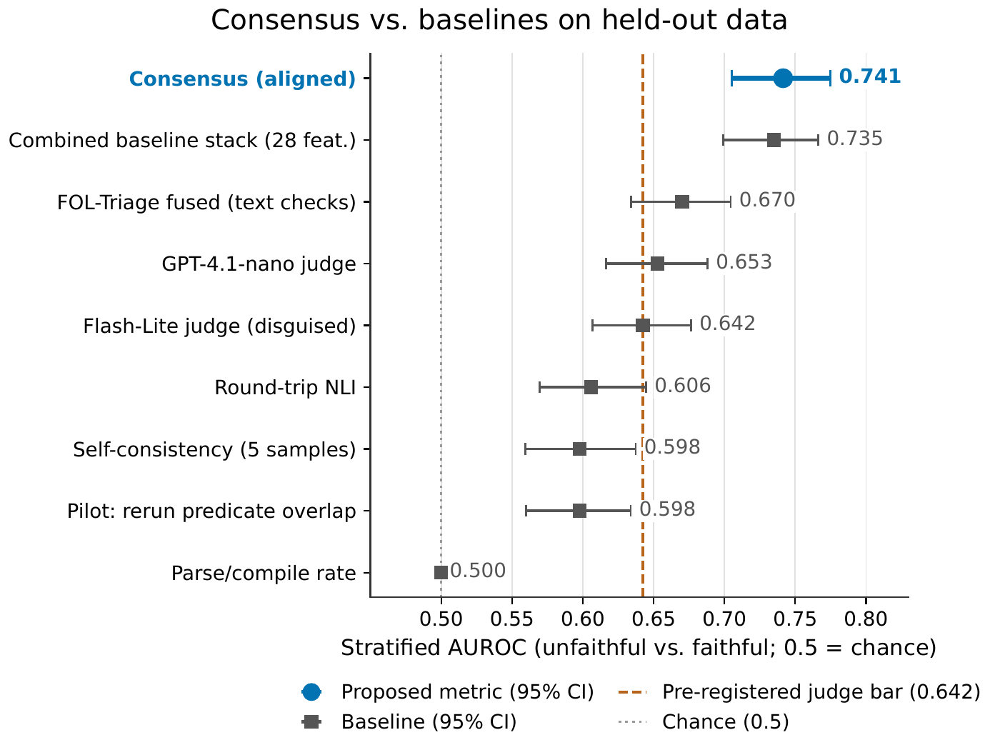
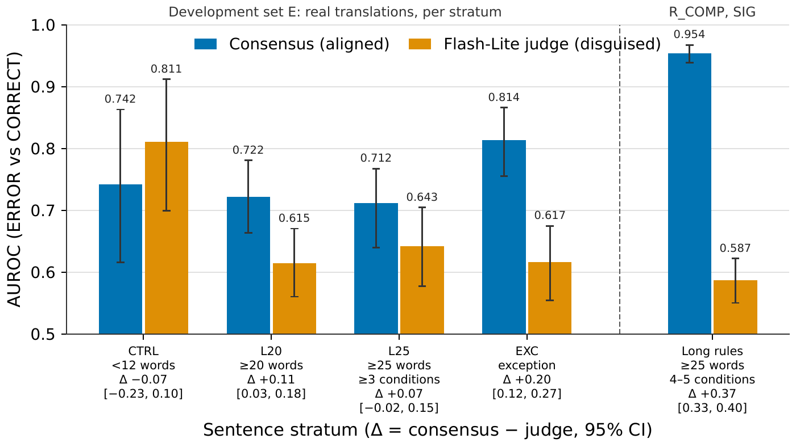
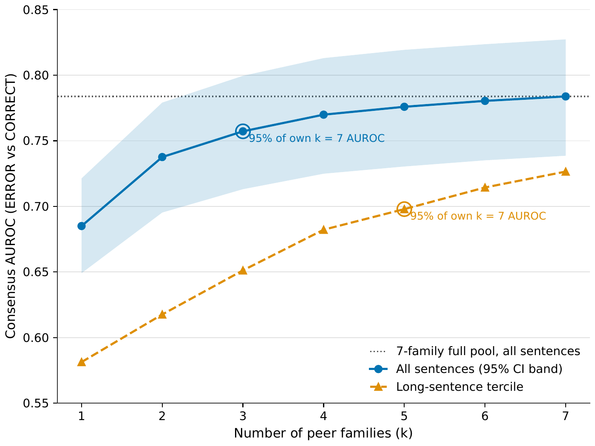

Cross-Family Solver Consensus Outperforms LLM Judges for Logic Translation Evaluation
Can you tell whether a first-order logic formula faithfully captures a sentence, without a gold reference? This paper tests cross-family solver consensus: have several independent LLM families translate the same sentence to FOL, then score each candidate by how many peers produce a z3-equivalent formula. On 2,686 real translations from nine model families, consensus achieves stratified AUROC 0.741, beating the best cheap LLM judge (0.642) by +0.099. On long rule sentences with trusted references it reaches 0.954. Three peer families are enough. The catch: any vocabulary difference between the candidate and its peers counts as disagreement, and no variant tested could fix this without losing discriminative power.
Contributions
Consensus beats judges
Cross-family solver consensus achieves stratified AUROC 0.741 on 2,686 real NL-to-FOL translations, exceeding the best cheap LLM judge by +0.099 [0.049, 0.146] and adding +0.039 [0.021, 0.057] over a 28-feature baseline stack. On long rule sentences with trusted references, it reaches 0.954 versus the judge's 0.587.
Meta-evaluation suite
A reusable evaluation set of 8,507 candidate formalizations from nine LLM families on 700 sentences, with z3-equivalence labels against audited gold and a three-member adjudication panel, plus 4,234 typed mutations and 868 meaning-preserving controls.
Failure modes characterized
The metric is vocabulary-dependent: any predicate renaming breaks z3 equivalence, producing false-alarm rates above 0.60 (nonce rename FA: 0.765). Error endorsement, where a majority of peers reproduce the same mistake, sets a recall ceiling near 62%. Three peer families capture 97% of performance at $0.002 per sentence.
Method
Problem
Given a natural-language sentence and a candidate FOL formula produced by any system, the goal is a score predicting whether the formula faithfully captures the sentence's meaning, without a reference formula, ontology, or controlled vocabulary.
Peer pool generation
Each sentence is translated by K independent LLM families under a fixed few-shot prompt at temperature 0, producing one canonical translation per family. In the experiments, K = 9 families span Llama-3.3-70B, Qwen3-235B, DeepSeek-V3.1, Mistral-Small-3.2, Gemini-2.5-Flash-Lite, GPT-4.1-Mini, GPT-3.5-Turbo, GPT-4, and text-davinci-003.
Pairwise equivalence with vocabulary alignment
Two FOL formulas with identical predicate names can be checked for logical equivalence by z3. When formulas use different predicate names (the common case across families), a vocabulary alignment step applies a greedy name-similarity mapping based on Levenshtein distance, constrained by arity consistency. After alignment, z3 checks equivalence under the mapped names. Each pairwise check takes a median of 5 ms.
Consensus score
For candidate c produced by system i, the consensus score is the fraction of other families whose translations are not z3-equivalent to c after vocabulary alignment. A candidate that agrees with all peers scores 0 (likely correct); one that agrees with none scores 1 (likely erroneous). The score is graded: partial agreement produces intermediate values.
Decomposition: endorsement and divergence
At any binary threshold, consensus performance decomposes into two failure modes. Error endorsement (e) is the fraction of erroneous candidates that a majority of peers endorse. Correct-candidate divergence (d) is the fraction of correct candidates that peers reject. On the development data, e = 0.124 and d = 0.537 for 9-family majority voting. Endorsement is higher for structural errors (57%) than polarity errors (5%); divergence rises with sentence length as vocabulary choices proliferate.
Cost
Generating peer translations dominates the cost at $0.0015 per sentence for six API peers. The z3 checks are free (CPU-only, median 5 ms per pair). Three families suffice for 97% of discriminative power at approximately $0.002 per sentence.
Results
Consensus vs. baselines on the development set
On the primary population (R_AB: 2,686 rows, 1,822 ERROR / 864 CORRECT, 292 sentences), the head-on test shows consensus exceeding the pre-registered judge bar by a stratified margin of +0.099 [0.049, 0.146].
| Metric | Strat. AUROC | 95% CI | vs. judge |
|---|---|---|---|
| Consensus (c_score_align) | 0.741 | [0.693, 0.787] | +0.099 |
| S4 stack (28 features) | 0.700 | [0.658, 0.739] | +0.058 |
| GPT-4.1-Nano judge (orig) | 0.653 | [0.607, 0.698] | |
| Flash-Lite judge (disguised) | 0.642 | [0.593, 0.690] | |
| FOL-Triage fused | 0.614 | [0.567, 0.660] | |
| Self-consistency (SC-5) | 0.592 | [0.548, 0.637] | |
| Round-trip NLI | 0.564 | [0.522, 0.606] | |
| Pilot structural metrics | 0.500–0.523 |
Adding consensus to the S4 stack of all 28 baseline features yields a nested gain of +0.039 [0.021, 0.057] (permutation-null 95th percentile: 0.009), confirming it carries signal the baselines lack. Code for the consensus metric, the baselines, and the FOL-Triage cascade is available.
Long rule sentences
On R_COMP SIG (1,904 rows from 221 templated sentences with at least 25 words, at least 3 conditions, and trusted references), consensus reaches within-template AUROC 0.954 [0.939, 0.968] versus the disguised Flash-Lite judge at 0.587 [0.551, 0.622], a gap of +0.367 [0.328, 0.404]. The advantage concentrates in the exception-sentence stratum (EXC: +0.197) and weakens on short FOLIO controls (CTRL: −0.069 [−0.23, 0.10]).
Comparison with the frontier judge
On a 284-row subsample where the frontier judge (Gemini 3.1 Pro) was scored, the consensus-to-frontier ratio is 0.957 [0.887, 1.034]: comparable discriminative power at 30 times lower cost per candidate ($0.000121 vs. $0.00365).
How many families are needed?
AUROC rises steeply from k = 1 (0.685) to k = 3 (0.785), matching the full 9-family pool (0.784). The mechanism analysis confirms that long sentences need more peers: the long-sentence tercile requires k = 5 families for 95% of its own full-pool value.
Sensitivity to error types
On the PERTURB suite (4,234 typed mutations plus 868 controls), consensus within-base AUROC is 0.866. The PEER+TEXT fusion reaches 0.948. Consensus is polarity-symmetric: the absolute recall difference between DOWN and UP perturbations is below 0.01 across all operators.
Negative results
The pilot structural metrics (joint satisfiability conflicts, arity inconsistency, predicate-shape agreement) achieved AUROCs between 0.500 and 0.533. Round-trip reformalisation reached 0.513 (76% ties). Candidate-signature consensus, which shares the candidate's own symbol list with peers, lowers correct-candidate divergence (d = 0.139 vs. 0.323) but sharply raises error endorsement (e = 0.459 vs. 0.173), dropping stratified AUROC to 0.614. Fusing consensus with text-based layers adds only +0.011 [−0.012, 0.038], not significant.
Figures



Limitations
Consensus requires that correct translations share enough predicate vocabulary for the aligner to bridge. When model families adopt systematically different naming conventions, correct candidates are penalized. Any metric based on solver equivalence inherits this problem.
When multiple families reproduce the same error, consensus cannot detect it. On the development data, 38% of errors are endorsed by the majority (12.4% at the majority threshold with 9 families). Peer-endorsed errors are concentrated in structural error types (57%) rather than polarity errors (5%).
The metric's advantage over judges depends on the label protocol. Under panel-adjudicated intent labels, the frontier judge's advantage over the cheap judge grows by +0.166 [0.086, 0.244], and the FOL-Triage text layers gain more than consensus. The primary labels are z3-equivalence to audited gold, which may overcount vocabulary mismatches as errors.
On the FOLIO CTRL stratum (short sentences, fewer than 12 words, at most 1 condition), consensus shows no advantage over the judge (−0.069 [−0.23, 0.10]). The advantage concentrates in long, conditioned, exception sentences.
Every vocabulary bridge tested either lowers discriminative power (name-free matching: AUROC 0.686 vs. 0.741) or admits too many false errors (gloss-gated matching: checker balanced accuracy 0.780, below the 0.90 threshold). A practical deployment would need to restrict the peer pool to a shared vocabulary, reintroducing the ontology dependence the metric is designed to avoid.
Budget constraints prevented full confirmation on a fresh sample. The development-set results are the strongest evidence; the single testable confirmation cell shows parity rather than superiority.
Experiment Code
- Held-out logic translation test set, panel-checked
- Peer agreement plus text checks, held-out test
- Long logic sentences and FOL error suite
- Re-checking earlier logic-metric results across label sets
- What is new about peer agreement for logic
- Do symbol hints help model agreement checks?
- Fresh logic test set, paused by budget
- Name-free labels for free-vocabulary logic translations
- Can shared vocabulary fix consensus blind spots?
- Consensus vs LLM judges on fresh logic data
- Second fresh sample of long logic sentences
- Free-vocabulary logic labels and metric test
- Screening fixes for model-agreement false alarms
- Corrected record: every paper number checked